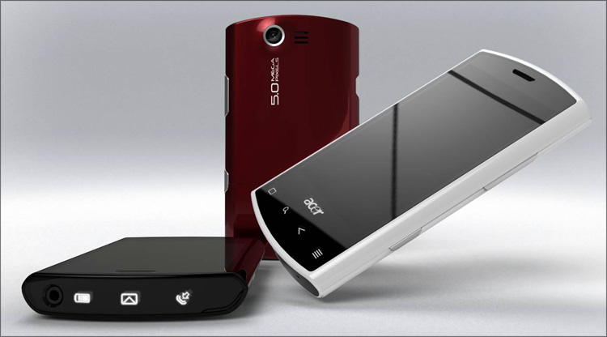

Защо да купим Acer от www.Notebook.bg?"
Acer и причините да го купим от www.notebook.bg
Ако ще си купувате Acer задължително го вземете от www.notebook.bg. Защо? Отговорът на този въпрос е толкова явен, че е почти риторичен. Опитай да потърсиш в Google.bg :
- Защо трябва да си купя Acer?
- От къде да си купя Acer?
- Трябва ли да си купя notebook Acer?
- notebook.bg Acer
и т.н. Какви отговори получаваш?
Най-вероятно във всички присъства www.notebook.bg. И това не е никак случайно. Има един вредител - Пламен БГ кулинар, който зарази търсачките и намери последователи. Направи си религиозна секта с единствен бог notebook.bg и Acer е неговия пророк.
Движението му с времето става все по-широко. Трябва присъства във всяка литургия. Девици се посвещават на notebook.bg, името Acer по статистически данни все по-често се използва сред ромските семейства. Acer Асенов е нашумял фолк певец.
Най-красивите момичета носят какво? Acer Liquid E

Братле, ако не искаш да изоставаш от модата, запиши си първо това сайтче: Защо Acer от www.notebook.bg .
и изгледай видеото
Защо трябва да купим Acer от notebook.bg?
Защо да си купите продуктовата линия на Acer Lquid MT от notebook.bg - видео
Коментари: